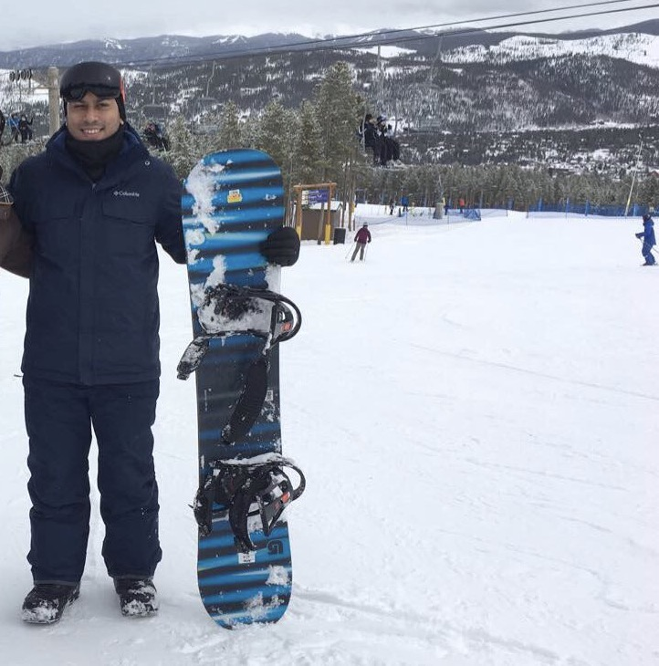
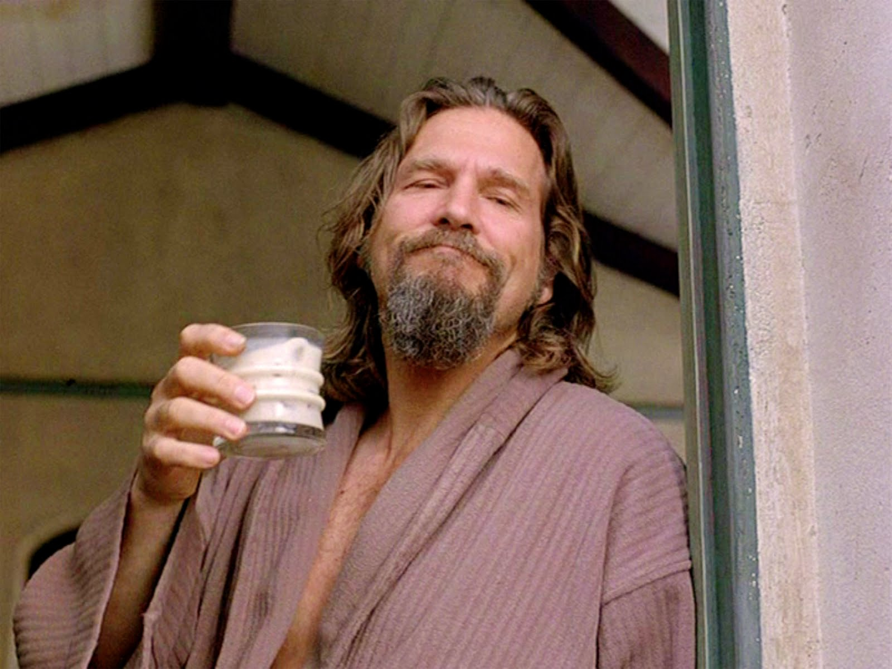

About Us
Get to know our team
Who we are
We are a team of four individuals passionate about travel. Our Team personally knows how stressful it can be preparing for a trip. Addicted to experiencing all the world has to offer, we created this site as a means to adequately prepare busy city-dwellers for their weekend adventures and make new friends.
Check out our developers' portfolios below to learn what inspires us.
Kristen De La Cerda
 Kristen has been traveling with her mother and father since she was a child and hasn't stopped since. While on a wine tour with her famiy in Napa
Valley, the desire to bring people together in unique settings emerged. Kristen is passionate preparing our Weekend Hikers for their getaways.
Kristen has been traveling with her mother and father since she was a child and hasn't stopped since. While on a wine tour with her famiy in Napa
Valley, the desire to bring people together in unique settings emerged. Kristen is passionate preparing our Weekend Hikers for their getaways.
Favorite Beverage: Wine
Matt Valladarez
 One of our prime developers, Matt, is an avid adventurer who found himself on a yoga trip in the Himalayas 5 years ago. While practicing his shavasana,
he sought to connect hikers from all over the world so that they may create experiences together.
One of our prime developers, Matt, is an avid adventurer who found himself on a yoga trip in the Himalayas 5 years ago. While practicing his shavasana,
he sought to connect hikers from all over the world so that they may create experiences together.
Favorite Movie: Into the Wild
Amar Katechia
After reuniting with his fraternity brothers in Tuscany, Italy last year, Amar itched for more chances to go on trips but felt consumed by his busy life as a financial analyst. In the midst of a burn out, he thought of the idea of connecting other busy young professionals to plan short trips together. He enjoys going on weekend hikes with his girlfriend to Yellowstone National Park.
Favorite Quote: "Life is either a daring adventure or nothing." - Helen Keller
Ronnie Hedrick
While on a trip to India for a technology think tank, Ronnie yeared of merging professional life and leisure. Ron's passion for his profession as a software engineer drove him to create a platform for adventurers to connect and plan trips together.
Favorite Song: Steppenwolf - Born to be Wild